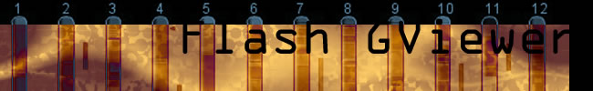

|  |
| View Annotations using Flash GViewer |
|
You can use this form to enter or upload your own annotations for display on GViewer. There are three steps in the process:
The annotation data format needs to be tab delimited, paste it into the annotation data field, leave all the other options at their default settings and click the Visualize Annotations button. |